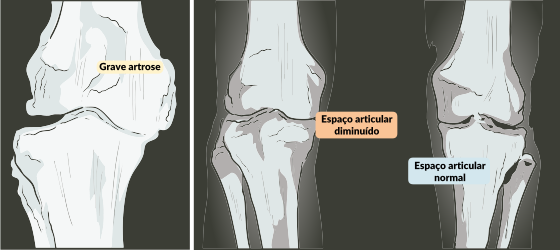

Para a confirmação diagnóstica, a radiografia simples da articulação acometida é, na maioria das vezes, suficiente. Os principais achados radiológicos de osteoartrose são:
Imagens radiográficas de paciente com osteoartrose grave no joelho.

Fonte: Faculdade de Medicina, UFMG.